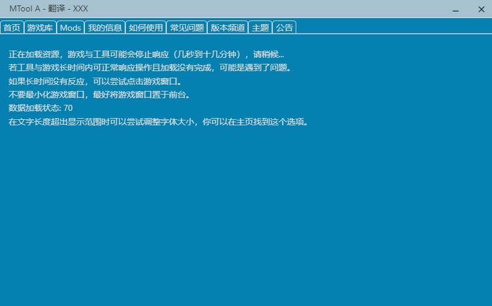

mtool 用了大半年：从免费必应到 lv.1 订阅，我对它的看法变了
一款日系同人游戏翻译工具的长期使用记录——当初为了玩 Wolf RPG 装上的工具，现在主力翻 SRPG Studio 战棋。说说哪些点越用越顺手、哪些坑踩过才知道绕着走。
装它的契机：一款翻不动的老 Wolf RPG
装 mtool 的起因很单一：手里压着一款 2012 年的 Wolf RPG 老游戏，剧情文本全是日文，之前用过的几款翻译工具要么识别不出引擎、要么翻到一半崩了。它的官网上写着"1.00 至最新版本全覆盖"，抱着试试看的心态去下载装上了——那天的预期就是"能跑就行"，没指望多好用。
从那到现在，大概八个月。期间换了三个引擎的游戏，从 RPG Maker 主流到 SRPG Studio 冷门，从免费档一路用到 lv.1 订阅。这篇文章不说"开箱体验"，说点时间长了才看出来的东西。
变化一：加载等待从焦虑变淡定
刚装上那会儿最慌的就是"正在等待游戏连接"那个界面。第一次等了十几分钟，以为卡死了，反复重启游戏、重启工具，最后才发现它真的只是在加载资源——官方提示写得很直白："游戏与工具可能停止响应（几秒到十几分钟），请稍候。"
现在养成的习惯是：把游戏窗口前台挂好、点一下鼠标给个交互信号、然后该干嘛干嘛。数据加载状态在跳动就继续等，完全无响应超过十几分钟才排查。这套"三不"原则（不最小化、不强制杀进程、不反复重启）是踩过三次坑之后才建立起来的。
排查清单也是翻过mtool文档才弄明白的。点游戏窗口、核对引擎选择、确认游戏没被第三方改过版本——这三条是排查的基础，最后才是那个右上角的感叹号错误回报入口。

变化二：引擎选择从盲试到有章法
刚上手时引擎下拉框列着八个选项，等级标注看得我一头雾水。必应免费、彩云 lv.1 才能用、ChatGPT 3.5 要 lv.2——这些等级和订阅档位的对应关系，翻了订阅说明才搞清楚。
现在按语向选引擎已经是肌肉记忆了。日文翻中文优先彩云，专攻日中路线译文最自然；英文翻中文先必应跑通流程，不满意再换 DeepSeek；Sugoi 留着日英互译的时候用。免费用户别急着订阅——必应的译文对理解剧情完全够用，很多玩家全程免费引擎玩通了游戏。先用免费跑起来，确认这个工具的工作流适合自己，再考虑付费才划算。
引擎列表会随版本更新增删，工具内翻译页的实时列表永远比任何文档准。这一点我深有体会：某个版本更新后 Free 翻译引擎从测试转正了，还是打开工具才发现的。
变化三：冷门引擎不再让我犹豫
之前碰过一款 SRPG Studio 战棋游戏，翻到一半挂接异常，以为是工具不支持就放着了。后来才知道官方清单里 SRPG Studio 一直在支持列表里，战棋游戏文本含大量单位名、技能名与战斗台词，文本框普遍比 RPG 紧，调一下字体就能解决大部分显示问题。
现在的策略是：冷门引擎游戏先翻一小段验证全链路——挂接、翻译、显示都正常再放心整本翻。小众引擎的支持迭代活跃，翻不动先更新工具版本，Wolf RPG 从 1.00 到最新的全覆盖就是这么滚动扩充出来的。
哪些功能碰都没再碰
翻译引擎的等级限制是我后来才注意到的一个好设计——免费用户能用必应和 Free 翻译，付费解锁的彩云、DeepSeek、Sugoi 各有专攻方向。但我一直没用到 lv.2 的 ChatGPT 3.5，可能是翻的游戏还没到需要那种量级译文质量的程度，也可能是习惯了 lv.1 的够用就行。
安卓端的支持我也只试过一次。手机端首次启动的白屏是初始化，和电脑端的挂接卡住是两回事。电脑端翻完离线玩的体验已经满足需求，手机端更多是便携场景的补充，不是主力。
长期用下来的几个反直觉发现
第一个反直觉：不要最小化游戏窗口。官方特别强调挂接依赖游戏进程的活跃状态，最小化挂后台是新手最常见的卡因。这条我踩过之后就记牢了，也写进了自己的使用笔记里。
第二个反直觉：不要自己先解密游戏。碰到加密 Wolf RPG 游戏，工具自动处理，手动解密反而容易把数据结构弄坏。原样放置、让工具去识别就好。
第三个反直觉：引擎识别错了是你自己的锅。启动界面的引擎下拉框不是摆设，识别成 Electron 64 位而实际是 32 位的情况真的会发生，手动改一下就通了，不用急着重装。
当初的判断修正
刚装的时候觉得"全版本覆盖"是个 marketing 话术——什么叫覆盖？翻不动不还是白费？八个月过去，这个判断变了。Wolf RPG 从 2010 年前后的老游戏到最新作品真的都能跑，不用先查版本号、不用手动解密，工具自动识别。这种"不需要你操心引擎版本"的设计，比引擎列表多长几行更实在。
还有当初觉得"免费引擎凑数"——错了。必应的译文确实偏直译，口语化不如彩云，但理解剧情完全够用。很多玩家全程免费玩通游戏，不是因为没钱，是因为够用就行。先免费跑起来确认工作流适合自己再考虑付费，这个顺序反过来就容易浪费钱。
去留结论
短期不会卸载。主力翻战棋和 RPG Maker 的需求还在，工具够稳定、引擎覆盖够广。
什么信号出现就该换？大概是遇到一款工具识别不出引擎的自制引擎游戏，而且社区也没人遇到过相同情况的时候。目前还没碰到过，希望永远别碰到——因为那意味着我得去找新工具了。